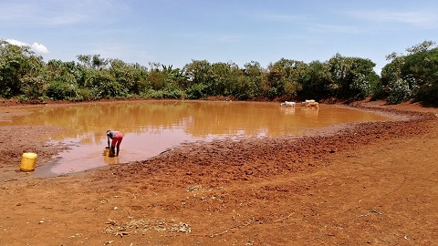

Research Projects
Quantifying the ecological impact of roads using sequential multi-level models
Shanghai Institute of Technology (YJ2021-73)
1/4/2021 - 31/03/2023

OneHealthWater – Drinking water under a ‘OneHealth’ lens: quantifying microbial contamination pathways between livestock and drinking-water